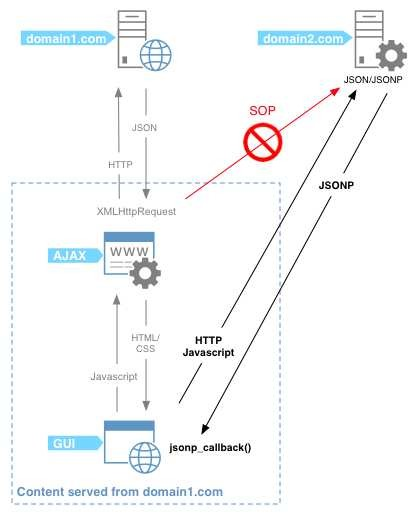

常见的网络请求模块，以及优缺点对比。
JSONP的原理和封装
JSONP原理回顾
JSONP请求封装
axios的内容详解
认识axios网络模块
发送基本请求
axios创建实例
axios拦截器的使用

选择什么网络模块?
选择三: 官方在Vue1.x的时候, 推出了Vue-resource.
Vue-resource的体积相对于jQuery小很多.
另外Vue-resource是官方推出的.
为什么不选择它呢?
在Vue2.0退出后, Vue作者就在GitHub的Issues中说明了
去掉vue-resource, 并且以后也不会再更新.那么意味着以后vue-reource不再支持新的版本时, 也不
会再继续更新和维护.对以后的项目开发和维护都存在很大的隐患.
选择一: 传统的Ajax是基于XMLHttpRequest(XHR)
为什么不用它呢?
非常好解释, 配置和调用方式等非常混乱.
编码起来看起来就非常蛋疼.
所以真实开发中很少直接使用, 而是使用jQuery-Ajax
Vue中发送网络请求有非常多的方式, 那么, 在开发中, 如何选择呢?
选择二: 在前面的学习中, 我们经常会使用jQuery-Ajax
相对于传统的Ajax非常好用.
为什么不选择它呢?
首先, 我们先明确一点: 在Vue的整个开发中都是不需要
使用jQuery了.那么, 就意味着为了方便我们进行一个网络请求, 特意引
用一个jQuery, 你觉得合理吗?jQuery的代码1w+行.
Vue的代码才1w+行.
完全没有必要为了用网络请求就引用这个重量级的框架.
选择四: 在说明不再继续更新和维护vue-resource的同时, 作者
还推荐了一个框架: axios为什么不用它呢?axios有非常多的优点, 并且用起来也非常方便.
稍后, 我们对他详细学习.
jsonp

在前端开发中, 我们一种常见的网络请求方式就是JSONP
使用JSONP最主要的原因往往是为了解决跨域访问的问题.
JSONP的原理是什么呢?
JSONP的核心在于通过<script>标签的src来帮助我们请求数据.
原因是我们的项目部署在domain1.com服务器上时, 是不能直接访
问domain2.com服务器上的资料的.这个时候, 我们利用<script>标签的src帮助我们去服务器请求到数
据, 将数据当做一个javascript的函数来执行, 并且执行的过程中传
入我们需要的json.所以, 封装jsonp的核心就在于我们监听window上的jsonp进行回
调时的名称.
JSONP如何封装呢?
我们一起自己来封装一个处理JSONP的代码吧.